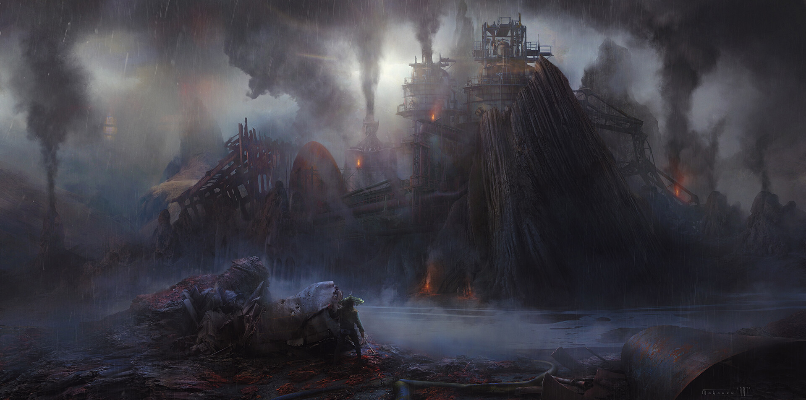
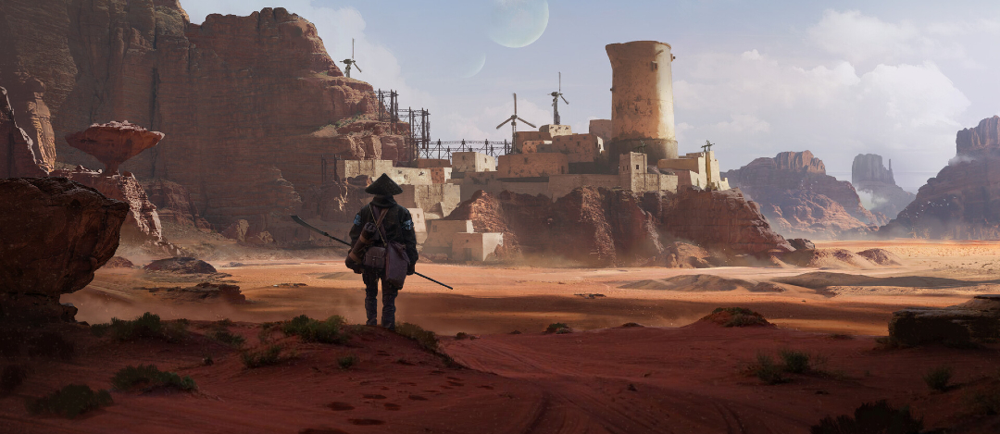
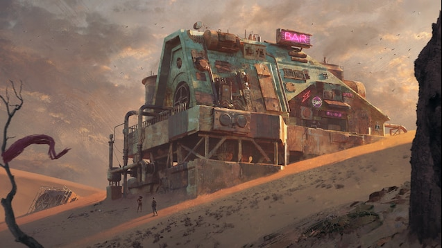

The world of Kenshi is relatively new to me, but the moment I set foot in the game I knew that it was something that I wanted to create a map of. The completely weird an original world idea was something that really drew me in, and the idea that the world just does not care about your presence at all really sells the idea. The world is so hostile and filled to the brim with believable factions and locations, I honestly haven't really seen something this unique in a long time. It's a bit of a niche community, but I hope to be able to share this artwork once it is complete!

Visual Direction & Design
The visual direction this game takes is harsh, but also beautiful in it's own way. It's main continental climate is dry, with deserts being the main biome that is traversed. This mixes with the cultural themes of Feudal Japan, which creates a distinct environment.
In my own art, my goal is to really push the warm colors while also maintaining a sense of territorial distinction. I'd have to double check, but there are probably 40+ seperate zones on the continent, and they each have their own style and feeling. My challenge is going to be to find the balance of warm colors and desert tones while still visually distinguishing the different areas the player can travel through!

A Deep Dive into the Lore
As mentioned above, the world of Kenshi is brutal and unforgiving. The world does not care about you, and within the first few minutes of starting a new game, you're probably either going to be enslaved by somebody, attacked by cannibals, or flat out dead. This kind of gameplay really pushes you to take things slowly and forces the player to adapt. The world itself has these distinct zones with seperate factions or clans. Entering different areas have their different challenges, and the world is so large you can essentially spend an entire game within one zone.
One of the challenges with drawing this then, would be to make sure I can capture the different feelings of the different cultural zones, as well as making sure I can add different geographical features that familiar players will be able to recognize. There is a lot under the surface with this game, and drawing it is allowing me to dive quite a bit deeper than expected!

Final Thoughts
I'm slowly creating this map, and haven't been able to put as much time into this as I would like. However, I have made good progress by laying down the foundations of a sketch, with different modders helping me access high resolution heightmaps/shadowmaps from in game that will definitely make my life easier!